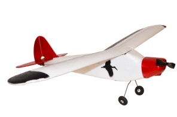
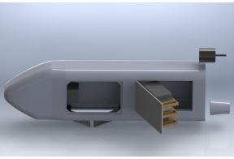

Hardware
Airplane
We originally chose to use a PROJET RQ-11 Raven airplane as our airplane body. It has a large fuselage that would be helpful when incorporating our electronics and payload release system. However, the powerful motor made it more difficult to control than we had hoped, and its components were expensive, not available for individual purchase (for repairs), and were not easy to repair ourselves. In addition, we had a setback when the Raven went out of stock from our suppliers. This reasoning caused us to change to a HobbyZone SuperCub airplane. Although it has less space inside for packaging, it is easy to fly, cheaper, and replacement parts can easily be obtained. This simpler plane allowed us to focus on the core aspects of our project.
-

Our SuperCub airplane
-

Packaging mockup with the PROJET RQ-11 Raven
Electronics
The StoRC system uses several electronic components. On-board hardware includes sensors, a microcontroller, radio transceivers, servos, and an ESC and motor. Ground hardware is composed of radio transceivers and a monitoring laptop. These are described in more detail below.
ArduPilot Mega 1.x IMU Shield
The ArduPilot Mega IMU Shield is a custom shield for the ArduPilot Mega board that met all of our sensor needs. The shield contains a 3-axis accelerometer, 3-axis gyroscope, pressure and temperature sensors, and 16MB flash memory, as well as GPS, Pitot probe and magnetometer support (sold separately). These sensors met all of our needs and using this pre-integrated board significantly reduced our setup time. The downside was that we had to figure out and work with the existing ArduPilot sensor libraries.
source
source
GPS
The MediaTek MT3329 GPS was one of the recommended GPS units by DIYDrones. It took some time to warm up and get a lock before each flight test. The connector for the cable is also fragile, as we discovered when we broke the plastic during one of our tests.
Pitot Probe
The airspeed kit we used is from DIYDrones, and includes a pitot probe, plastic tubing, a PWM cable, and uses a MPXV7002DP sensor. This sensor (datasheet) only outputs the differential pressure betwen its ports and thus cannot be used to obtain only the static pressure, for example. But it was fairly accurate and worked well enough for our purposes.
source
source
Magnetometer
The 3-axis magnetometer we used was also from DIYDrones. Paired with the orientation code built into the ArduPilot sensor libraries, as well as the accelerometer and gyros, it allowed us to determine the airplane's orientation fairly accurately. This was a necessary component of our project.
ArduPilot Mega 1.x
The ArduPilot Mega is a custom Arduino board designed specially for hobby UAV applications by the DIYDrones group. It was a smart choice for our microcontroller because it is a tested system that allowed us to piggy back off of existing sensor reading and logging functionality. It also uses the popular and easy to use Arduino programming language. While additional work was required to understand its code (documentation was not as abundant as we hoped) and adapt its coding to our purposes, overall it proved to be a time saver and allowed us to focus on the more significant components of our project. We ended up writing our own code and only reusing the libraries for reading from the sensors and downloading data onto a laptop.
source
ElectriFly C-35 ESC
The ElectriFly C-35 ESC is a hobby ESC for use in R/C airplanes. It is programmable and supports both NiCd and LiPo batteries. Ours took significant abuse and had to be repaired on more than one occasion.
source
source
SuperCub Brushed DC Motor
The motor we used is a brushed motor that comes with the SuperCub kit (Unfortunately the brushless motor we used for the Raven airplane was too powerful to be used with the SuperCub). We needed to perform experimental testing to determine the motor constants and internal resistance of the motor. This data was used in our simulations and analysis later on. The motor proved to be slightly less powerful than we would have liked, as we had barely enough power to fly with the weight of all our components.
FlySky TH9X 2.4GHz RC System
The FlySky TH9X RC System is an (effectively) 8 channel RC system for hobby applications. This was a great option for us because the 8 channels meant that in addition to conventional elevator, rudder, and throttle control, we had 5 additional inputs for our airplane. This allowed us to tweak the system code mid-flight, which sped up our testing and increased our data analysis capabilities. In addition, some of the channels are dial knobs and some are switches, giving us more freedom when choosing which system parameters to tweak.
XBee Pro 900 XSC
The XBee Pro 900 XSC RF module is a wireless radio module that is easy to setup, easy to read data from, and has a line-of-sight range of over 5 miles. This tranceiver worked well for us. We used simple serial communication to write to and read from two of the modules in order to send data from the airplane to the laptop on the ground. We could view the data in real time during flight tests as well as log it for later analysis.